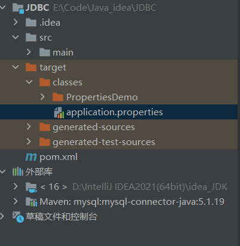
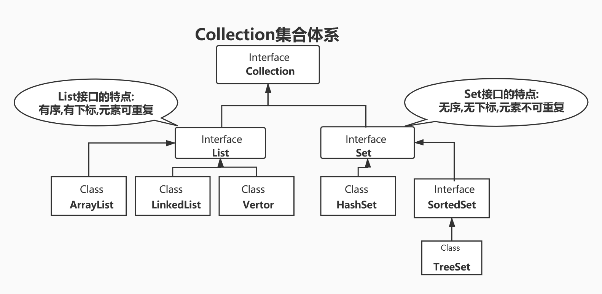
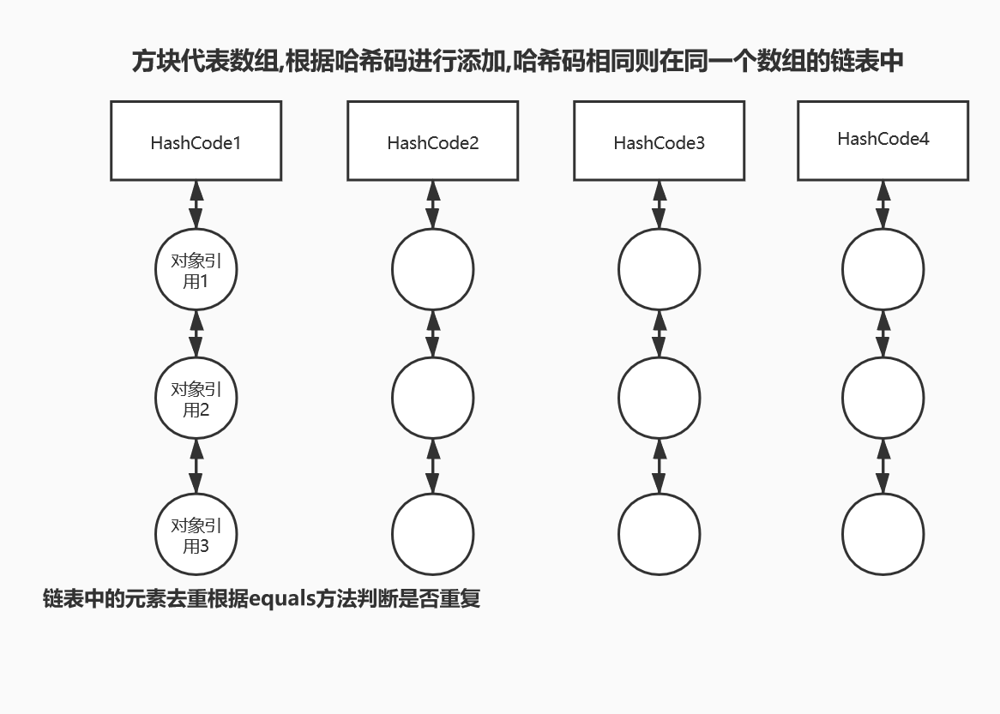
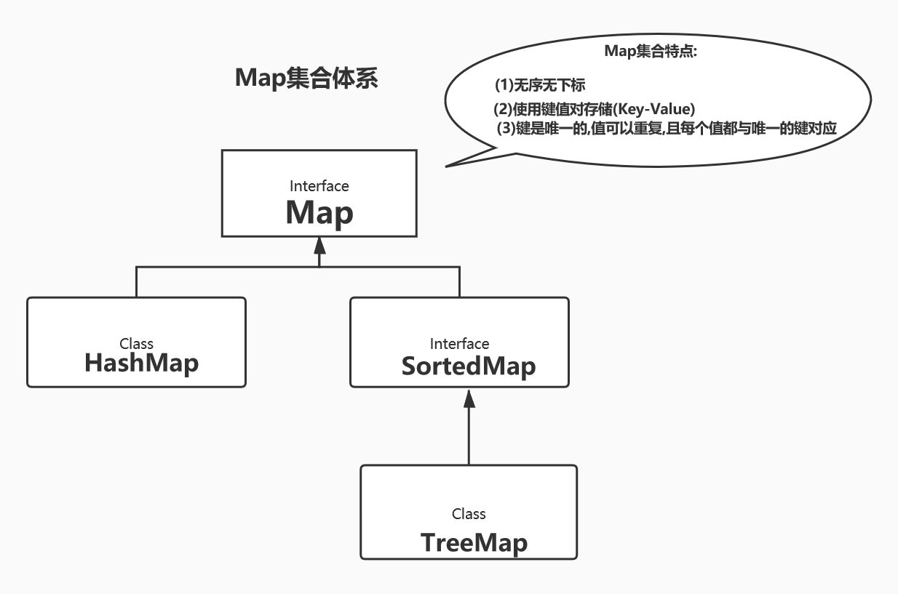
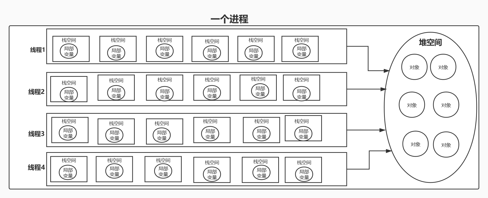
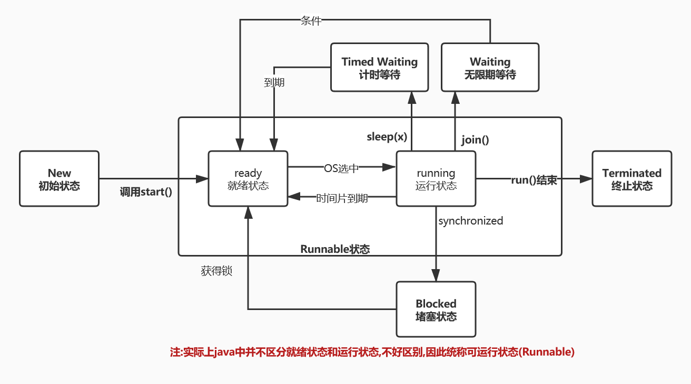
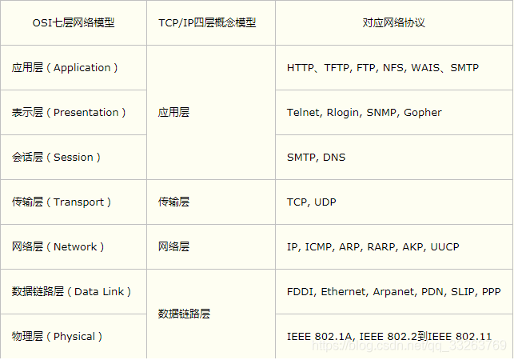

JavaSE进阶
文件类与IO流
File类
构造方法(并不真正创建文件):
File(Stirng filename): 其中的参数是文件名,默认放在当前程序同一目录
File(Stirng 路径, String filename):
Fiel(String dir ,Stirng filemane): 其dir指目录
注意: 注意区别相对路径(相对于src)和绝对路径(磁盘目录)
常用方法:
1.boolean createNewFile() 创建一个文件 此方法返回true，如果指定的文件不存在，并已成功创建。如果该文件存在，该方法返回false。
2.long length() 测量文件长度(单位是字节)
3.boolean isFile() 判断文件是否是文件而不是目录
4.boolean exists() 判断文件是否存在
5.String getParent() 获取文件的父目录
6.String getAbsolutePath() 获取文件的绝对路径
7.boolean delete() 删除文件
创建文件:
1 | package 文件类与IO流.creat_file; |
InputStream,OutputStream,字节流IO流
字节流主要是用于处理文件(如图片,视频音乐等),因为这些文件都采用二进制来存储
文件字节输入输出流
1.输入输出都是相对与程序来说的:即输入流是从外部获取数据到程序,输出流是程序输出数据到外部
2.输入输出流在使用后都要关闭,先用的后关,后用的先关
构造方法
将文件字节流绑定到文件 1.FileInputStream(String 文件名):
2.FileInputStream(File 文件对象):
1.FileOutputStream(File 文件对象): 将文件字节输出流绑定到文件
2.FileOutputStream(String 文件名):
3.FileOutputStream(File 文件对象, boolean append): 第二个参数设置是否追加,默认是重写
4.FileOutputStream(File 文件对象, boolean append):
常用方法:
输入流方法:
1.int read() 从源中每次读取一个字节的数据,并返回字节(0~255), 读到文件末尾返回-1
2.int read(byte[] b) 从源中读取b.length个字符到b字节数组中,返回实际读取的字节数 ,读到文件末尾返回-1
3.int read(byte[] int off, int len) 从源中读取 len个字节到字节数组b中,并返回实际读取的字节数, 参数off指定从数组的某个位置开始存放读取的数组
4.void close() 关闭流,如果不关闭,有可能绑定的资源不允许另一个程序操作绑定的资源
输出流方法:
1.void write(int n) 每次向绑定的资源中写入一个字节n
2.void write(byte b[]) 每次向绑定的资源中写入一个字节数组
3.void write(byte[] b , int, off ,int len) 每次向从字节数组中的off位置开始向绑定资源中写入len个字节
4.void close()
总结: 由于字节流是以字节为单位进行数据处理,但汉字是以多个字节储存的,所以用字节流处理中文就会出现乱码现象,所以在处理汉字时用字符流进行处理
InputStreamReader,InputStreamWriter,字符IO流
字符流主要用于处理汉字时出现乱码问题的
1.构造方法:
1 | InputStreamReader(InputStream in, String charsetName) ; //创建一个指定字符集的输入流,常用来解决中文乱码问题 |
文件字符输入输出流
构造方法
字符输入流:
FileReader(Stirng 文件名); FileReader(File 文件对象);
字符输出流:
FileWriter(String 文件名); FileWriter(File 文件对象);
FielWriter(Sring 文件名, boolean append): FileWriter(File 文件名, boolean append);
常用的方法和字节流基本一致,
注意!!! 但对于Writer 的write() 方法将数据首先写入缓冲区,每当缓冲区溢出时内容才会被自动写入绑定资源,如果关闭流缓冲区内容也会被立刻写入,==也可以调用flush()方法立刻写入==
总结: 字节流主要用于图片，视频等二进制的文件,字符流用于文本文件
读写文件:
1 | package 串实验; |
缓冲流ButteredReader和ButteredWriter
用于增强流的读写能力
构造方法
ButteredReader(Reader in);
ButteredWriter(Writer out);
常用方法:
1.String readLine(): 一次读取一行数据
2.void writeLine(): 一次写入一行数据
序号化和反序列化
序列化:将对象转换成字节流
反序列化: 将字节流转换成对象
构造方法:
ObjectInputStream(InoutStream in): 创建一个输入对象的字节流,参数 in 是要绑定的字节流或者是字节流的子类 **ObjectOutputStream(OutputSream out):**创建一个输出对象的字节流,其中参数out是要绑定的字节流或者是其子类
常用方法:
1.void writeObject(Object object): 将对象写入对象所绑定的输出流中
2.Object readObject() 将输入流中的对象读取出来并且返回
Serializble接口 (可序列化接口)
在使用writeObject(Object object)方法将对象序列化时,要序列化的对象必须实现Serializble接口将对象设置成可序列化状态,
1 | public class Test{ |
IO之Propertest类与配置文件读取
properties文件介绍
在开发项目时,项目通常会依赖一些中间件,这些中间件的配置不是硬编码写在代码中,而是使用配置文件方式存储
常用配置文件有以下几种:
- properties文件: SpringBoot应用都有应用此配置文件
- xml文件: 如MyBattis的配置文件
- JSON文件
properties文件通常采用键值对存储,key=value
1 | server.port=8081 |
Properties类的使用
Properties类的介绍
Properties类表示一组持久存储的属性,属性由属性名和属性值组成.Properties可以保存到流(以流的方式写入)或者从流中加载,属性列表中每个键及其对应的值都是字符串
Properties可以当成Map集合使用,但是一般不会这样做
常用方法:
1 | properties.getProperty(String key) //根据键值获取属性 |
Properties文件读取
当Properties文件放在项目下时,properties文件会随着java程序在编译生成字节码时一起打包在同一个目录下,故可以通过类加载器来获取文件流进而读取文件内容

1 | //从类加载器加载加载文件,由于在生成字节码时Properties文件会随着java文件编译被一起打包到同一目录下,故可以通过类加载器读取到文件 |
如文件中含有中文,出现乱码问题则改为字符流
1 | InputStreamReader in = new InputStreamReader(PropertiesDemo01.class.getClassLoader().getResourceAsStream("application.properties"),"utf8"); |
Properties文件写入
1 | Properties properties = new Properties(); |
集合
- 概念: 对象的容器,定义了对多个对象进行操作的常用方法,可实现数组的功能
- 与数组的区别:
- (1) 数组长度固定,集合长度不固定
- (2) 数组可以存储基本数据类型和引用类型,集合只能存储引用类型(但是基本数据类型可以装箱转换)
Collection集合体系
(并非实际结构,只表示大致关系)
常用方法
- boolean add(Object obj) 在集合尾部添加一个对象
- boolean addAll(Collection c) 将一个集合的所有对象添加到此集合中
- void clear() 清空此集合中所有对象
- boolean remove(Object o) 移除此集合中的o对象
- Object[] toArray() 将集合中的所有元素以数组形式返回
- boolean isEmpty() 判断此集合是否为空
- boolean contains(Object o) 判断此集合中是否包含o对象
- boolean equals(Object o) 判断此集合是否与o对象具有相同的引用
- int size() 返回此集合中元素个数
- Iterator
iterator()方法: 获取当前集合的迭代器
迭代器的使用以及方法:
- boolean hasNext()方法:当迭代器的下一位置不为null时,返回true,否则返回false (即判断下一次集合中是否还有元素)
- Object next()方法: 获得迭代器位置下移,返回下移后的元素
- void remove()方法:删除迭代器所指向的元素(注意:在迭代过程中只能用此方法删除元素)
List接口
**特点:**有序,有下标,元素可重复
常用方法(除了Collection原有的方法外)
- void add(int index,Object obj): 在列表的指定位置添加元素(第一个元素的下标为0)
- void addAll(int index, Collection c) :从指定位置开始将c中所有元素添加到列表中
- Object get(int index):放回指定下表的元素
- int indexOf(Object o):放回指定元素的索引,不存在返回-1
- Objcet remove(int index):移除指定下标的元素
- void removeRange(int fromIndex,int toIndex):含头不含尾的移除指定下标到指定下标的元素
- Object set(int index,Object o):将指定索引位置的对象替换为o
- Object[] toArray():按照列表中元素的顺序返回包含列表所有元素的数组
- ListIterator ListIterator():返回列表的列表迭代器
ListIterator常用方法(相比较于Iterator新增):
(1)boolean hasPrevious():逆向遍历,如果前一个有元素则返回true,否则返回false
(2)Object previous():迭代器指针前移,返回前移后的元素
(3)int NextIndex():返回对next()调用后返回元素的索引
(4)int PreviousIndex():返回对previous()调用后的返回元素的索引
(5)void set(Object o):将迭代器指针所指向的位置的元素替换为o
(6)void add(Object)
ArrayList数组列表实现类
- 实现结构:使用数组结构实现
- 特点: 查询快,修改慢
LinkedList链表实现类
- 实现结构:双向链表实现
- 特点:查询慢,修改快
Vector向量实现类(不推荐用)
- 特点: 线程安全,但是运行效率低,有更好的代替
Set接口
特点:无序,无下标,不可重复元素
常用方法(与Collection基本一致)
- **int HashCode()*获取哈希码值
关于哈希码: 如果两个对象具有相同的引用(即equals的返回值为true),则哈希码一定相同,但哈希码相同,对象不一定具有相同的引用 * - boolean equals(Object o),判断是否是同一个对象(如果该类没有重写此方法的的话)
迭代器(没有ListIterator迭代器)的使用以及方法:
- boolean hasNext()方法:当迭代器的下一位置不为null时,返回true,否则返回false (即判断下一次集合中是否还有元素)
- Object next()方法: 获得迭代器位置下移,返回下移后的元素
- void remove()方法:删除迭代器所指向的元素(注意:在迭代过程中只能用此方法删除元素)
HashSet哈希集合实现类
- 实现结构:采用数组+链表+(JDK1.8之后加入红黑树)
 - 特点:元素唯一,根据哈希码HashCode和equals()方法和equals()方法来去重
TreeSet树集合实现类
- 实现结构:红黑树
- 特点:
(1) 基于排序来去重按顺序存储
(2) 实现了SortedSet接口,对集合元素自动排序
(3) 元素对象的类型必须实现Comparable接口,指定排序规则
(4) 通过CompareTo()方法来确定是否为重复元素 - 要求:
元素必须是可以比较的,即实现Comparable接口
或使用TreeSet(Comparator com)构造器来创建集合为集合添加比较器
ps:
(1)Compareable接口:只有一个int ComparaTo (E o)方法,调用对象和参数比较,一般来说,调用者大于参数则返回正数,小于则返回负数,等于返回0
(2)Comparator接口: 只有一个int compara(E o1,E o2)方法
1 | public class Student implements Comparable<Student>{ |
1 | //创建自定义比较器的树集合 |
Map<K,V>集合体系

常用方法:
- **V get(Object key):**根据参数的键值返回对用的Value
- **V put(K key,V value)**向集合中加入键值对
- **void putAll(Map<K,V>)**将参数中的Map集合添加
- Set
keySet():将Map集合中的键以Set 的形式返回 - Set<Map.Entry<K,V>> entrySet(): 将Map集合中的键值对整体以Set集合的形式返回
- Collection
values():将Map集合中的Value以Collection集合的形式返回 - V remove(Object key)
- boolean containsKey()
- boolean containsValue()
- int size()
- boolean isEmpty()
重要嵌套接口和遍历
- 遍历方式:
(1) 遍历Map可通过keySet()转化成键的Set集合遍历
1 | for(Set<V> key:map.entrySet()){ |
(2) 通过entrySet()转化成键值对(Map.Entry)Set集合对来遍历
1 | //获得map的Entry 集合 |
其中通过键值对来遍历效率要更高,因为通过键集合来遍历需要遍历两次
- Map嵌套接口Entry<K,V>:
该类是Map集合的一个内部接口,表示Map的一个键值对,该接口提供了一些方法可以得到对应map集合的一下key或者value,以及修改Key对应的Value
如: V **setValue(V value)**方法,将此键对应下的值替换为参数的Value
HashMap集合
- 特点:
(1) JDk1.2版本,线程不安全(不同步),运行效率高,允许null作为Key或Value的值
(2) 存储结构:哈希表(数组+链表+JDK1.8加入红黑树),去重依据:根据Key的equals()和HasCode() - 源码分析:
(1)属性: 初始容量,扩容因子(*指的当集合内元素个数>集合的容量扩容因子 的时候,集合的的容量会扩大至原来的2倍*)*
1 | // 当添加一个元素时,初始容量为1<<4即16,不存在元素容量为0,便于节省空间 |
(2) 构造器:
1 | //无参构造:默认扩容因子为0.75,不过刚创建好时 table是null,size是0 |
(3) 方法:
1 | //put(K key,V value)方法 |
- HashSet与HashMap的关系的
通过查看源码可发现,HashSet实际上就是使用了HashMap的结构,只不过Value为null
1 | public HashSet() { |
Hashtable集合
特点: JDK1.0版本,线程安全,运行效率低,不允许null作为Key或者Value
重要子类:Properties:要求key,value都是String,通常用于配置文件的读取
TreeMap集合
- 特点:实现了SortedMap接口,可以对key自动排序
- 存储结构:采用红黑树,去重规则是根据compara(Objcect o1,Object o2)即元素自身的比较器或元素的ComparaTo(Object o)方法即使元素实现了comparabale接口
TreeMap与TreeSet的关系
通过查看源码,可发现TreeSet实际上是调用了TreeHap来实现的
1 | public TreeSet() { |
Collections工具类
- 概念:集合工具类,定义了除了存取以外的集合常用方法
常用方法:
- public static void sort(List
list)//升序排列(元素必须实现Comparable接口) - public static void reverse(List
list) //反转元素集合顺序 - public static void shuffle(List
list) //随机重置集合元素的顺序 - public static int binarySearch(List
list , T object)//二分查找(前提元素已经是排序好的),返回索引值 - public static void copy(List copy_list,List list)//复制,不过两个参数的元素个数必须相同
补充扩展:
(1) 当把数组转换成集合时,该转化的集合是一个受限集合,不能添加或者删除元素
1 | String[] names = {"zhan","wenwen"}; |
(2) 把基本类型数组转化成集合时,需要注意由于基本类型数组也是引用类型数据,故转化后的集合只有一个元素(即该基本数据类型数组)
1 | int [] nums = {100,200,300}; |
多线程
线程概述:
线程是CPU的基本调度单位,进程是操作系统的基本调度的单位,一个进程由一个或者多个线程组成
在同一个进程中的线程资源共享,但是进程之间相互独立
线程抢占式执行
线程的组成:
(1)时间片: 操作系统(OS)会为每个线程分配执行时间
(2)运行数据:
- 堆空间:存储线程中使用的对象,多个线程可以共享堆中的对象
- 栈空间:存储线程中使用的局部变量,每个线程都有拥有独立的栈

创建线程
1.继承Thread类创建线程,并且重写run()方法:
1 | public class MyThread extends Thread{ |
- 实现接口runnable
1 | public class Myrunnable implement Runnable{ |
构造方法:
1.**Thread():**无参构造
2.**Thread(Runnable run):**有参构造,**绑定的接口Runnable的线程,执行方法由Runnble提供,**降低耦合性
3.**Thread(String name):**参数代表创建线程时将其命名
4.**Thread(Runnable run,String name):**绑定接口,并且将其线程命名
常用方法:
1.void start():启动线程,注意!thread.start()与thread.run()有本质区别,虽然有时候执行结果是一样的
2.static Thread currentThread(): 获得当前线程
3.Stirng getId():获得线程ID,每个线程ID是唯一的且由OS提供,不能更改
3.Srting getName(): 获得线程的名称,线程名称可以自定义
线程的优先级(Priority):
线程的优先级为1-10,默认为5,优先级越高,表示获得CPU的机会越多
设置优先级的方法:线程对像.setPriority(int newPriority),其中的参数表示设置的优先级
线程的4(6)种状态:

注:线程的运行结束时间片到期不代表线程销毁,run()方法执行完毕线程才真正销毁;
某个线程的run()方法还没结束但是时间片到期了,其他线程也能抢占CPU进而执行
常用方法:
(1)启动
void start():启动线程,注意!thread.start()与thread.run()有本质区别,虽然有时候执行结果是一样的
(2)sheep休眠:线程时间片用完后就休息(等待)一段时间再争取
static void sleep(long 等待毫秒数):,时间片每用完一次就休息一会
(3)yield放弃(避让):主动放弃争取本次时间片让给其他线程机会,回到就绪状态进行下一次的时间片的争取
**static void yield():**主动将当前线程放弃
(4)join加入:在一个线程中加入另一个线程后,当前线程会进入堵塞状态,等待加入的线程执行完以后再执行当前线程
final void join():,如addThread.join(),代表在当前线程中加入addThread线程
线程属性
前台线程
守护线程(即后台线程)
守护线程即为前台线程服务的线程
方法:
void setDaemon(true):,前台线程
注意:当前台线程结束后,守护线程无论是否执行完毕都会自动结束,java中的垃圾回收器就算一个守护线程
线程安全问题
描述:多个线程共同操作同一空间,会出现数据丢失的情况
当多个线程并发访问临界资源,如果破坏原子操作,可能会出现数据不一致
- 共享资源: 即共享资源,一次仅允许一个线程使用才能保证其正确性
- 原子操作: 不可分割的多部操作,被视为一个整体,其顺序和步骤不可打乱或者缺省
例子:
1 | public class Thread_safe { |
在没有发生安全问题时的输出结果应该为:
[world, hello, null, null, null]或
[hello, world, null, null, null],发生安全问题后则结果为:[world, null, null, null, null]或[world, null, null, null, null]
常见的Java线程安全类:如StringButter,Hashtble,Vector等
synchronized 关键字的使用
在使用synchronized添加锁时一定要注意是否是同一个对象锁,不可使用new 创建一个对象锁如:
1 | /*注意!这样的锁没意义,每次都会创建一个新的锁对象*/ |
(1)synchronized(){代码块}:,同步代码块,给代码块添加锁
**(2)synchronized 方法(){}:**修饰为同步方法(注意:当同步方法为非静态方法时,锁对象是this,当是静态方法时锁对象是类即 类.class)
线程通信(堵塞线程以及唤醒线程)
通过synchronized可以对方法和代码块上锁,同样的也可以通过锁对象调用waitin()方法来将线程加入等待队列(加入等待队列的线程无法抢夺CPU,直到使用notify()方法将其唤醒)
从而释放该线程锁占用的锁,使得其他线程有机会抢夺CPU
常用方法:
注意:调用这几个方法的对象都是锁
1.锁对象.wait():将线程持有的锁释放,线程加入等待队列,等待队列的线程不能参与CPU的争夺
2.notify():
(1)随机唤醒等待队列的一个线程,唤醒的线程不一定只是有争夺CPU的机会并不一定能夺得CPU;
(2)唤醒的线程执行时将从wait()处开始执行
3.notifyAll():唤醒等待队列的全部线程
常见问题:
假设有四个线程:两个存钱线程(晨晨,明明),两个取钱线程(冰冰,莉莉),要求有银行卡里没钱时不能取钱,银行卡里有钱时不能存钱
- 问题1:标记没进行二次判断
加入在判断时使用如下代码进行存钱的操作
1 | public synchronized void subMonney(int m){ |
例如:
当两个取钱线程处于等待队列时,晨晨执行成功,修改了余额标记,唤醒莉莉
接着莉莉开始执行,执行成功后,唤醒了冰冰,即使已经修改了标记,但是方法中的if语句已经执行完毕,不会再次判断,而是直接从this.wait()语句之后开始执行,于是导致再次进行了取钱操作导致余额变成了负数导致程序与预期不一样
解决方案:将if换成while可以多次判断
- 问题2: 全部陷入等待队列导致死锁
例如:
前两次执行了取钱操作均失败,都进入等待队列
第三次晨晨存钱成功,修改标记,唤醒冰冰
第四次明明存钱失败,释放锁,进入等待队列
第五次晨晨存钱失败,释放锁,进入等待队列
第六次冰冰取钱成功,修改标记,唤醒莉莉**(问题所在,当唤醒的是功能相同的线程时,最终都两个取钱线程操作失败都进入等待队列形成死锁)**
第七次莉莉取钱失败,释放锁进入等待队列
第八次冰冰也取钱失败释放锁进入等待队列
解决方案:将notify()方法替换成notifyAll()唤醒全部线程
高级线程
线程池
线程池:即线程的容器
常用API
Executor:线程池的顶级接口
ExecutorService:线程池服务接口,用于管理线程池
Executos,线程池工厂类,用于创建线程池
ExecutorService的常用方法
submit(Runnable task):向线程池提交任务
shutdown():关闭线程池,如果不关闭程序不会停止
Executors的常用方法
(1)创建固定大小的线程池: staitc newFixedThreadPool(int 个数)
(2)创建缓存线程池:static newCachedThreadPool()
1 | /*常见的创建线程池并使用的格式如下*/ |
Callable接口和Future接口
Callable接口:
使用方法和Runable接口类似,其实现方法是call()方法,与run()方法的区别:call()方法可以抛出异常声明和拥有返回值,而run()方法都不可以
但由于Thread的构造方法中没有Callable接口的参数,故没法直接绑定到线程
1 | //使用匿名内部类创建callable上转型对象 |
注: 不过线程池的submit()方法可以直接添加Callable接口对象
Future接口:
Future
常见方法:
故常见写法如下:
1 | //创建线程池 |
线程的同步和异步
**同步(有等待):**形容一次方法的调用,同步一旦开始,必须等待该方法返回才能继续.
**异步(无等待):**形容一次方法调用,异步一旦开始,像是一次消息传递,调用者告知后立刻返回.两者竞争时间片,并发执行.
Lock接口
ReentrantLock(实现类,即重入锁)
功能与synchronized类似
JDK5加入与synchronized比较,显示定义,需要手动释放,结构更灵活,功能更强大,性能更优越
区别:synchronized采用悲观锁,而Lock采用乐观锁(乐观锁通俗说就是不堵塞其他线程假设不会冲突,如果冲突就不断重试)
ReentrantReadWriteLock(读写锁):可分别分配读锁和写锁
互斥规则:
- 写-写,互斥堵塞
- 读-写,互斥,读堵塞写,写堵塞读
- 读-读,不互斥,不堵塞
1 | //创建读写锁 |
- ReentrantReadLock 读锁
可并发执行,即允许多个线程同时拿到读锁 - ReentantWriteLock 写锁
不可并发执行,一次只允许一个线程获得写锁
注解与反射
注解Annotation
如: @Override
Annotation的作用:
- 不是程序本身,对程序做出解释
- 可以被其他程序读取
Annotation的格式
- 以@注解名在代码中存在,可以有参数值,例如:@SuppressWarmings(value=”unchecked”)
- Annotation可以作用在method,fleld(字段),TYPE(类型),package,class,上面,相当于给他们添加了额外的辅助信息,我们可以通过反射机制编程实现对这些元数据的访问
内置注解
- @Override:定义在java,.lang.Override中,此注解用于修饰方法中,表示这个方法是要覆盖父类方法的
- Deprecated: 此注解可以修饰方法,类,属性,表示已经过时,不推荐使用,通常是危险的或者是有更好的替代
- @SuppressWarmings:用于抑制编译器的警告信息,与前两个注解不同,此注解必须要有参数,参数是已经定义好的
元注解
元注解用于对其他注解的定义修饰
- @Target:用于描述注解的使用范围
- @Retention:表示需要在什么级别保留该注解信息,用于描述注解的声明周期(source<class<runntime)
- @Document:说明该注解被包含在javadoc中
- @Inherited:说明子类可以继承父类的中的该注解
JDk中@Override注解的源码
1 | //定义此注解的使用范围 |
自定义注解
- 自定义注解的格式:public @注解名{定义内容}
- 其中每一个(抽象)方法实际上是声明了一个配置参数
- 可以通过default来声明参数的默认值
- 如果只要一个参数成员,一般参数名为value,因为只有一个参数且名为value时使用可隐式赋值参数
- 注解元素必须要有值
1 | //自定义注解 |
- 返回值类型只能是参数的类型(返回值只能是Class,String,enum)
Reflection反射机制
动态VS静态语言
- 动态语言:是指在运行是可以改变其结构的语言,像新的函数,对象,甚至代码可以被引进.如JavaScript,PHP,Python,C#等
- 静态语言:与动态语言相对应,运行时结构不能改变的语言,如: C C++,Java(但是java也有一定的动态性,可利用反射机制获得类似动态语言的特性)
反射机制提供的功能
- 在运行时判断一个对象所属的类
- 在运行时构造一个任意类的对象
- 在运行时判断一个类具有的属性和方法
- 在运行时获取泛型信息
- 在运行时调用任意一个对象的属性和方法
- 在运行时处理注解
- 生成动态代理
反射的优缺点
- 优点:可以实现动态创建对象和编译,具有很大的灵活性
- 缺点:对性能有影响,使用反射基本上是一种解释操作,我们可以告诉JVM,我们希望做什么并且他满足我们的要求,这类操作总是慢于我们相同的操作
Class 类
一个类只有一个Class对象,并且类在加载后由系统创建,类的结构信息会封装在Class对象中
在加载完类之后,在堆内存区中就产生了一个Class类型的对象(一个类中只有一个Class对象),这个对象包含了完整的类结构信息,我们可以通过这个Class对象看到类的结构,这个对象就像一面镜子,通过这个镜子看到类的结构,我们形象的称之为:反射
创建对象的方式:
- 正常方式: (1)引入包类名称 (2)通过new 实例化 (取得实例化对象)
- 反射方式 (1)实例化对象 (2) getClass()方法 (3)得到完整的”包类名称”(即获得一个Class 对象)
获得Class对象的几种常用方式:
方式一:通过对象.getClass()
方式二:通过Class.forName(“包类名”)
方式三:通过类名.class
常用方法
- static Class forName(String name) 返回指定类名的Class对象
- Class newInstance() 调用构造器返回Class对象的实例
- Class getSuperClass() 返回当前Class对象的父类的Class对象
- Class[] getInterface()
- ClassLoader getClassLoader() 返回该类的类加载器
类的加载过程
(1)Load:类的加载:将类的Class文件读入内存,并为之创建一个Class文件,此过程由类加载器完成
(2)Link:类的链接:将类的二进制数据合并到JRE中
- **验证:**确保加载的类的信息符合JVM规范,没有安全问题
- 准备: 正式为静态变量分配内存并设置初始值,这些内存都在方法区中分配
- **解析:**虚拟机常量池的符号引用(常量名)替换为直接引用(地址)的过程
(3)Initialize:类的初始化:JVM负责对类进行初始化
- 执行类构造器
()方法的过程,类构造器 ()方法是由编译期自动收集所有类变量的赋值动作和静态代码块的语句合并产生的 (此类构造器与对象的构造器即构造方法不是同一个东西) - 当初始化一个类时,如果返现其父类还未初始化会先初始化父类
- JVM会保证一个类的构造器的
()方法在多线程环境中被正确加锁和同步
如:
1 | public class ClassLoader { |
输出结果:
A类静态代码块
A类的无参构造
m=200
什么时候会发生类的初始化?
- 类的主动引用(一定会发生类的初始化):
-> 当虚拟机启动,先初始化main()方法所在的类
-> new 一个类的对象
-> 调用类的静态成员和静态方法(除了final常量)
-> 使用java.lang.reflect包的方法对类进行反射调用
-> 当初始化一个类,如果其类的父类没有被初始化,则会先初始化他的父类 - 类的被动引用(不会发生类的初始化):
-> 当访问一个静态域时,只有真正声明这个域的类才会被初始化,如:当通过子类引用父类的静态变量,不会导致子类初始化Son.m //其中m为父类的类变量,但是父类初始化
-> 通过数组定义类引用,不会触发此类的初始化
-> 引用常量不会触发此类的初始化(常量在链接阶段就存入调用类的常量池中了)
类加载器
类加载器作用是用来把类装载进内存.JVM规定了如下类型的加载器
- 引导类加载器:用C++编写,是JVM自带的加载器,负责java平台核心库的装载,该类无法直接获取
- 扩展类加载器:负责jre/lib/ext目录下的jar包或者指定目录下的jar包装装入工作库
- 系统类加载器: 负责java-classpath或者-D java.class.path所指的目录下的类与jar包装入工作,是最常用的加载器
测试代码:
1 | //获取系统类加载器 |
运行结果:
jdk.internal.loader.ClassLoaders$AppClassLoader@2077d4de 系统类加载器
jdk.internal.loader.ClassLoaders$PlatformClassLoader@3830f1c0 扩展类加载器
null 由于是根加载器,即引导类加载器,无法获取,所以为空
jdk.internal.loader.ClassLoaders$AppClassLoader@2077d4de 用户自定义的类也是由系统类加载器加载
null JDK内置类的加载器也是根加载器
获取类的结构
通过反射能获取到类的结构有:
- Field(属性)
- Method
- Constructor(构造方法)
- Annotation
- SuperClass
- Interface
1 | Field[] fields = c1.getFields(); //获得public 的属性 |
即不带有Declared的只能获取public 的,带有Declared自己所拥有的(不包括父类)
反射动作
有了类的Class对象,就可以:
(1)构造对象
- 有无参数构造: 调用Class对象的newInstance()方法
-> 类必须有无参构造方法
-> 无参构造方法的访问权限必须足够 - 没有无参构造:
步骤如下: (1)通过Class类的getDeclareConstructot(Class …paremeterTypes)取得指定Constructor对象, (2)Constrcutor对象调用new Instance()方法
1 | //获得Class对象 |
(2)调用普通方法
首先获取通过Class对象获取到Method对象,然后Method调用invoke(方法所在的对象,实参列表)方法
1 | Constructor<User> constructors = c1.getDeclaredConstructor(String.class,int.class); |
(3) 操作属性
首先通过Class对象获取Field对象,Field对象调用Set(字段所在属性类的对象,字段的值)方法
1 | //通过反射操作属性 |
设置可访问权限
Constructor Method Field 都有一个setAccessible(boolean flage)方法,默认情况下是false,即使访问权限不开放,private修饰的成员是不可见的,但设置为true之后,将开放访问权限,使得哪怕是private成员也可见(频繁使用反射建议开放)
性能对比:
普通方式>反射(开放权限)>反射(不开放权限)
反射获取注解与ORM(对像关系映射)
**对象关系映射:**将实体类映射成一个表,其中
- 类和表结构对应
- 属性和字段对应
- 对象和记录对应
(重点)反射获取注解
注解的做作用域对象调用getAnnotation(Class Element)方法
1 | //定义类名的注解 |
反射操作泛型
(1) java采用泛型擦除的机制来引入泛型,Java中泛型仅仅是给编译器javac使用的,确保数据的安全性和免去强制转换类型的机制,但是,一旦编译完成,所有和泛型有关的类型全部擦除
如:
1 | List<String> list1 = new ArrayList(); |
(2) 通过反射操作这些类型,java新增了ParamerterizedType,GenericArrayType,TypeVariable和WildcardType几种类型代表不能被归一到Class类中的类型但是又和原始类型齐名的类型
- ParamerterizedType: 表示参数化类型,即泛型
- GenericArrayType: 表示泛型或者引用类型变量的数组
- TypeVariable:是各种类型变量的公共父接口
- WildcardType:代表一种通配符的类型表达式
1 | //获得Class对象方法 |
Lambda表达式
1. Lambda表达式的简介
1.1. Lambda表达式的概念
lambda表达式， 是Java8的一个新特性， 也是Java8中最值得学习的新特性之一。
lambda表达式， 从本质来讲， 是一个匿名函数。 可以使用使用这个匿名函数， 实现接口中的方法。
对接口进行非常简洁的实现， 从而简化代码。
1.2. Lambda表达式的使用场景
通常来讲， 使用lambda表达式， 是为了简化接口实现的。
关于接口实现， 可以有很多种方式来实现。 例如： 设计接口的实现类、 使用匿名内部类。 但是
lambda表达式， 比这两种方式都简单。
1 | /** |
1 | private static void interfaceImpl() { |
1.3. Lambda表达式对接口的要求
虽然说， lambda表达式可以在一定程度上简化接口的实现。 但是， 并不是所有的接口都可以使用
lambda表达式来简洁实现的。
lambda表达式毕竟只是一个匿名方法。 当实现的接口中的方法过多或者多少的时候， lambda表达式
都是不适用的。
lambda表达式，只能实现 函数式接口 。
1.4. 函数式接口
1.4.1. 基础概念
如果说， 一个接口中， 要求实现类 必须 实现的抽象方法， 有且只有一个！ 这样的接口， 就是函数式接口。
1 | public int test(int a) { |
1 | // 这个接口中， 有且只有一个方法， 是实现类必须实现的， 因此是一个函数式接口 |
1.4.2. @FunctionalInterface
是一个注解 , 用在接口之前 ,判断这个接口是否是一个函数式接口。 如果是函数式接口， 没有任何问题。如果不是函数式接口，则会报错。 功能类似于 @Override。
1.4.3. 系统内置的若干函数式接口
Predicate
1 | IntPredicate: 参数int， 返回值 boolean |
Consumer
1 | IntConsumer: 参数int， 返回值 void |
Function<T, R> T R
1 | IntFunction<R>: 参数 int， 返回值 R |
Supplier
1 | BooleanSupplier: 参数无， 返回值 boolean |
UnaryOperator
1 | IntUnaryOperator: 参数 int， 返回值 int |
BinaryOperator
1 | IntBinaryOperator: 参数 int, int， 返回值 int |
BiPredicate<L, R> L,R
BiConsumer<T, U>
BiFunction<T, U, R>
2. Lambda表达式的语法
2.1. Lambda表达式的基础语法
lambda表达式， 其实本质来讲， 就是一个匿名函数。 因此在写lambda表达式的时候， 不需要关心方法名是什么。实际上， 我们在写lambda表达式的时候， 也不需要关心返回值类型。我们在写lambda表达式的时候， 只需要关注两部分内容即可： 参数列表 和 方法体
lambda表达式的基础语法：
参数部分： 方法的参数列表， 要求和实现的接口中的方法参数部分一致， 包括参数的数量和类型。
方法体部分： 方法的实现部分， 如果接口中定义的方法有返回值， 则在实现的时候， 注意返回值的返回。
->: 分隔参数部分和方法体部分。
1 | (参数)-> { |
1 | public class Syntax { |
1 | // 2. 有参、无返回值的方法实现 |
1 | // 3. 多个参数、无返回值方法的实现 |
2.2. Lambda表达式的语法进阶
在上述代码中， 的确可以使用lambda表达式实现接口， 但是依然不够简洁， 有简化的空间。
2.2.1. 参数部分的精简
参数的类型
1 | 由于在接口的方法中，已经定义了每一个参数的类型是什么。 而且在使用lambda表达式实 |
参数的小括号
如果方法的参数列表中的参数数量 有且只有一个 ，此时，参数列表的小括号是可以省略不写
的。
注意事项:
只有当参数的数量是一个的时候， 多了、少了都不能省略。
省略掉小括号的同时， 必须要省略参数的类型。
1 | // 4. 无参、有返回值的方法的实现 |
1 | // 5. 一个参数、有返回值的方法实现 |
1 | // 6. 多个参数、有返回值的方法实现 |
1 | // 多个参数、无返回值的方法实现 |
2.2.2. 方法体部分的精简
方法体大括号的精简
当一个方法体中的逻辑， 有且只有一句的情况下， 大括号可以省略。
1 | return的精简 |
3. 函数引用
函数引用： 引用一个已经存在的方法， 使其替代lambda表达式完成接口的实现。
lambda表达式是为了简化接口的实现的。 在lambda表达式中， 不应该出现比较复杂的逻辑。 如果在
lambda表达式中出现了过于复杂的逻辑， 会对程序的可读性造成非常大的影响。 如果在lambda表达
式中需要处理的逻辑比较复杂， 一般情况会单独的写一个方法。 在lambda表达式中直接引用这个方法
即可。或者， 在有些情况下， 我们需要在lambda表达式中实现的逻辑， 在另外一个地方已经写好了。
此时我们就不需要再单独写一遍， 只需要直接引用这个已经存在的方法即可。
1 | // 有一个参、无返回值的方法实现 |
3.1. 静态方法的引用
语法： 类::静态方法
注意事项: 在引用的方法后面，不要添加小括号。引用的这个方法,参数（数量、类型） 和 返回值，必须要跟接口中定义的一致。
3.2. 非静态方法的引用
语法：对象::非静态方法
注意事项:在引用的方法后面， 不要添加小括号。引用的这个方法， 参数（数量、类型） 和 返回值， 必须要跟接口中定义的一致。
示例:
1 | public class Syntax1 { |
1 | public class Syntax2 { |
1 | private static class Calculator { |
3.3. 构造方法的引用
使用场景
如果某一个函数式接口中定义的方法， 仅仅是为了得到一个类的对象。 此时我们就可以使用构造方法的引用， 简化这个方法的实现。
语法: 类名::new
注意事项:可以通过接口中的方法的参数,区分引用不同的构造方法。示例
1 | public class Syntax3 { |
1 |
|
1 | private interface GetPersonWithParameter { |
1 | public static void main(String[] args) { |
1 | GetPersonWithParameter lambda2 = Person::new; // 引用到Person类 |
3.4. 对象方法的特殊引用
如果在使用lambda表达式，实现某些接口的时候。 lambda表达式中包含了某一个对象， 此时方法体
中， 直接使用这个对象调用它的某一个方法就可以完成整体的逻辑。 其他的参数， 可以作为调用方法
的参数。 此时， 可以对这种实现进行简化。
1 | public class Syntax { |
1 | // 如果对于这个方法的实现逻辑，是为了给对象的某些属性进行赋值 |
1 | // 如果对于这个方法的实现逻辑，正好是参数对象的某一个方法 |
1 | interface ShowTest { |
1 | interface SetField { |
1 | interface GetField { |
1 | class Person { |
1 | public void setName(String name) { |
1 | public String getName() { |
1 | public void show() { |
4. Lambda表达式需要注意的问题
这里类似于局部内部类、匿名内部类，依然存在闭包的问题。如果在lambda表达式中，使用到了局部变量，那么这个局部变量会被隐式的声明为 final。 是一个常量， ==不能修改值。==
5. Lamb da表达式的实例
5.1. 线程的实例化
1 | Thread thread = new Thread(() -> { |
5.2. 集合的常见方法
1 | ArrayList<String> list = new ArrayList<>(); |
5.3. 集合的流式编程
1 | // 按照条件进行删除 |
1 | ArrayList<String> list = new ArrayList<>(); |
网络编程
1.1概述
计算机网络:
计算机网络是指将地理位置不同的具有独立功能的多台计算机及其外部设备，通过通信线路连接起来，在网络操作系统，网络管理软件及网络通信协议的管理和协调下，实现资源共享和信息传递的计算机系统。
网络编程的目的:
无线电台,传播交流信息,数据交换,通信
需要做什么:
- 如何准确定位网络上的一台主机 192.168.16.124:端口
- 找到了这个主机,如何传传输数据
Java web: 网页编程 B/S
网络编程: TCP/IP C/S
1.2网络通信的要素
如何实现网络的通信?
通信的地址:
- IP
- 端口
规则:网络通信的协议
TCP/IP参考模型

小结:
- 网络编程的有两个主要问题
- 如何准确的定位网络上的一台或者多态计算机
- 找到主机后如何进行通信
- 网络编程中的要素
- IP和端口号
- 网络通信协议:TCP UDP
IP
ip地址:InteAddress
- 唯一定位一台网络上的计算机
- 127.0.0.1 :本机localhost
- ip地址的分类
- ipv4/ipv6
- **IPV4 **: 127.0.0.1,由4个字节组成,0-255
- IPV6: 2409:8a5c:4027:bd50:4168:a92e:8054:524b ,128位,8个16进制数的4位数整数
- 公网(互联网)-私网(局域网)
如：192.168.xxx.xxx
- ipv4/ipv6
- 域名,为了方便记忆,实际上就是ip地址
端口(Prot)
端口表示计算机上的一个程序的进程
- 不同的进程有不同的端口号!用来区分软件
- 端口被规定 0-65535
- 单个协议下端口号不能冲突
- 端口分类:
- 公用端口 0-1024
- http:80
- https:443
- ftp: 21
- Telent:23
- 程序注册端口
- Tomcat: 8080
- MySQL: 3306
- Oracle : 1521
- 动态,私有端口
查看所有端口 [cmd命令]
查看指定端口所被占用的进程id(PID) [cmd命令]
通信协议
网络通信协议: 速率,传输码率,代码结构,传输控制
问题: 太繁杂,于是有了分层的概念
套接字Socket = 端口Prot + IP地址
其中,IP地址用来标识网络上的唯一的一台计算机,而端口是用来唯一标识程序的进程
TCP/IP协议:实际上是一组协议
两个重要的协议
- TCP:用户传输协议
- UDP:用户输出报协议
TCP和UDP对比
TCP:相当于打电话
链接,稳定
三次握手,四次挥手
1
2
3
4
5
6
7
8
9最少需要三次握手,保证稳定链接!
A : 滴滴
B : 在
A : 在干嘛?
四次挥手
A : 我要断开了
B : 我知道你要断开了
B : 你确定要断开了嘛
A : 我真的要断开!客户端,服务端
传输完成,释放链接,效率低
UDP:相当于发短息
- 不连接,不稳定
- 客户端,服务端:没有明确的界限
- 不管对方是否接受,都能发送
TCP
实现简单通信
1 | //服务端 |
1 | //客户端 |
UDP
发短信,只需要知道地址,不需要建立链接
1 | public class Receive { //接收端 |
1 | public class Send { //发送端 |